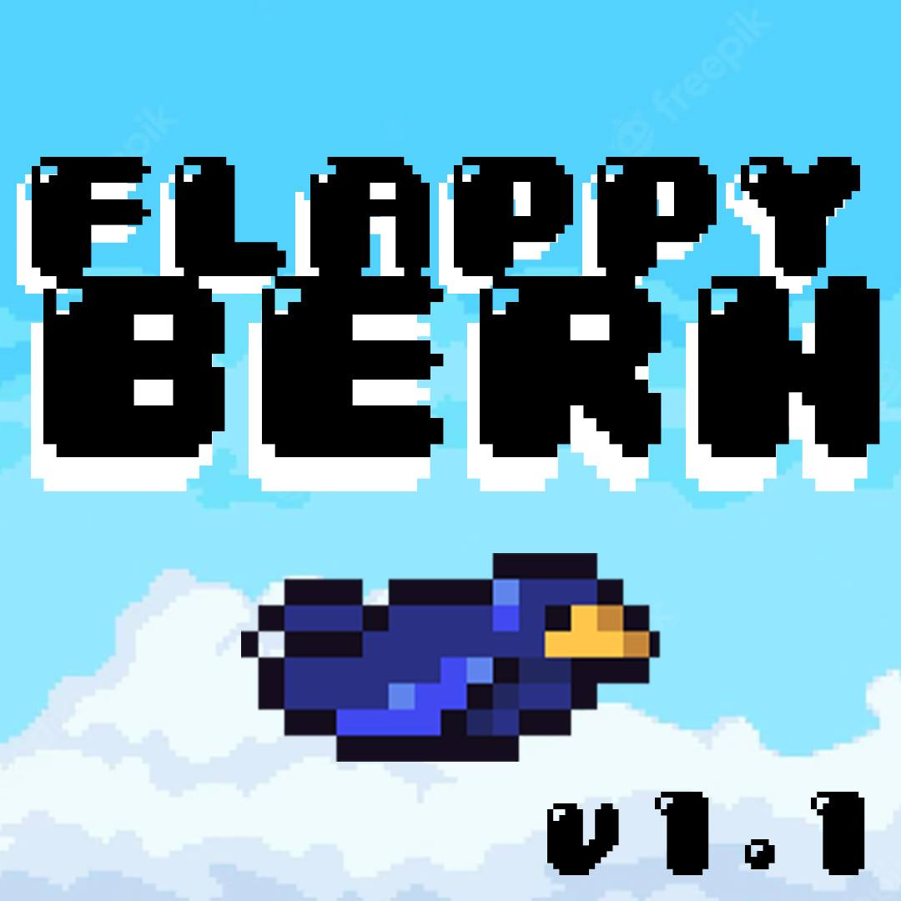
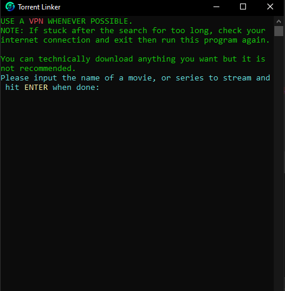
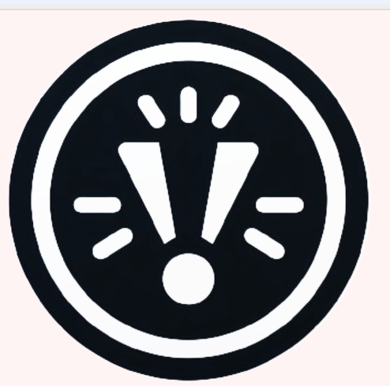

BALERMO
Home
About Me
Projects
Contact
PROJECTS

Flappy Bern
Developed a fully functional Flappy Bird replica in Unity within just one week, learning basic game principles.
Windows
Android

Torrent Linker
Created a Python script to stream videos from torrents, enabling playback before download completion.
Windows
Github

Study Management App
Launched SMYT, an Android app to enhance study management, receiving positive feedback for improving grades.
Android
Github